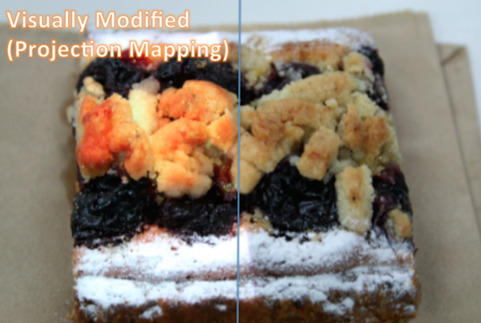

リサーチアシスタント @ Sony CSL
デザイナー @ takram (2015年3月まで，インターン)
2012年度未踏クリエータ（プログラマブルフードの開発）．
2014年内閣府地域経済分析システムRESASプロジェクト参画（takramインターン）．2014年リクルートホールディングス米国インターン優勝．
2015年CCHANNEL賞，TRUFFLE CAPITAL賞など
ご連絡 / English / C.V. / Rekimoto Lab / Sony CSL

Programmable Food

Programmable Foodは食べ物をプログラムするプロジェクトです。第一段階として試作したMIDAS FORKは味の変化を事前にプログラムすることができます。
Programmable Food is a concept that makes food programmable to realize richer experiences
of fine dinning. As the first step, MIDAS FORK enables chefs to program transition of tastes
such as bitter to sweet or sweet to bitter. The system consists of a programming interface
and computationally enhanced cutlery. Chefs can program the transition of tastes in advance,
and the cutlery seasons foods by shooting seasonings using sensing and pumping mechanism.
Y.Kita and J.Rekimoto. Digitally Enhanced Utensils: Designing Time-sensitive Gustations.16th International Conference on Human-Computer Interaction 2014
Granted $18,000 by Exploratory Software Project, IPA MITO, 2012-2013 (Project Completed)
DEEP LOOK: Dynamic Focus Interactions

DEEP LOOKは２次元の画にインタラクティブなぼけ効果をつけるシステムです。鑑賞者の視点にあわせてピンぼけした画像を表示します。絵画鑑賞以外にも、複雑な地図の一部だけを意識に浮き上がらせる事ができます。
This system adds a dynamic focus interaction on a picture to provide a depth perception of
the image. The system makes layers of viewer's gaze point to be in the focus, others out of
the focus using a gaze tracker and image processing algorithm. Through this system, a Monet's
painting turns from a static image into dynamic 3D image, or an complex subway map emphasizes
the focusing lines as if they are floating on the other lines. The system is applicable for a
novel art gallery, education or general guidance.
Appeared at iii Exhibition, The University of Tokyo, August 2012
Spot Light 
SpotLightはプロジェクターとパラメトリックスピーカーで料理の見た目や音を拡張します。
SpotLight is a desk lamp shaped device that enriches food presentation with visual and sound enhancement.
The system contains an RGB camera, depth camera, projector, and parametric speaker.
It projects computationally enhanced image and sound onto the food. The basic function of
SpotLight is to modify visual presentation of food with projection mapping. It is effective
because food appearance is delicate especially for a fine dinning. SpotLight captures the RGB
image and 3D shape of food, and projects computationally enhanced images with projection mapping
techniques. While existing food presentation enhancement focused on only the color of the food,
SpotLight enhances various aspects of food including color, gloss and shadow.
Y.Kita and J.Rekimoto. Spot-Light: Multimodal Projection Mapping on Food. HCI International 2013
This project aims to realize ink simulation with a simple coloring strategy. Although the strategy is simple, it creates beautiful gradients as if it colors with full simulation of ink in a thin water. Three parameter are provided to configure paiting style (water paiting, oil painting etc).
Ganeza is a open source network visualizer/analyzer. It works on Processing, easy to implement to various projects such as SNS visual analysis, computer network experiments, etc. I created this library for analize the network structure of ingredientes across recipes on the web.
Working Experience
Sony Computer Science Laboratory, Research Assistant (Sept 2015 - present)
takram design engineering, designer (Apr 2014 - Mar 2015)
Exploratory Software Project, IPA MITOH, Chief Developer (Aug 2012 - Feb 2013)
Igarashi Design User Interface Project, JST ERATO, Research Assistant (Jun 2010 - Mar 2013)
Publications (Peer-reviewed International Conference)
1. Y.Kita and J.Rekimoto. Digitally Enhanced Utensils: Designing Time-sensitive Gustations.16th International Conference on Human-Computer Interaction 2014.
2. Y.Kita and J.Rekimoto. Thermal Visualization on Cooking. Proceedings of the 23rd International Conference on Artificial Reality and Telexistence (ICAT), Tokyo, Japan, 2013.
3. Y.Kita and J.Rekimoto. Spot-Light: Multimodal Projection Mapping on Food. 15th International Conference on Human-Computer Interaction 2013.
Awards and Grant
Outstanding Graduation Thesis, Aoyama Gakuin University (Mar 2012)
IPA MITOH (Aug 2012)
1st, U.S. Intern of Recruit Holdings, Inc. (Sept 2014)
TRUFFLE CAPITAL AWARD (Aug 2015)
CCHANNEL AWARD (Aug 2015)
Exhibitions and Invited Talks
National Museum of Emerging Science and Innovation (2011, Igarashi ERATO), CRISTAL (Table Interface for Home Devices)
The University of Tokyo (2012, iii Exhibition), CAPINNIT (Books that search images)
The University of Tokyo (2012, iii Exhibition), DEEPLOOK (Dynamic blur with gaze tracking)
LINE (2013, MITOH Conference), Programmable Food
Maker Fair Tokyo (2014, Tokyo Big Sight)
Microsoft (2014, MITOH Conference), Wet Materials
Recruit Holdings, Inc (2015, TECH LAB PAAK), Chefs' Hippocampus (Creating new recipes with computer)